4. Žiadosť o poskytnutie prostriedkov mechanizmu
Žiadosti o poskytnutie prostriedkov mechanizmu (ďalej len ŽoPPM) podané cez Portál ISPO môžeme na neverejnej časti ISPO vidieť s pridelenou pracovnou pozíciou Čitateľ ŽoPPM, v ľavom paneli v záložke ŽoPPM - Všetky ŽoPPM.
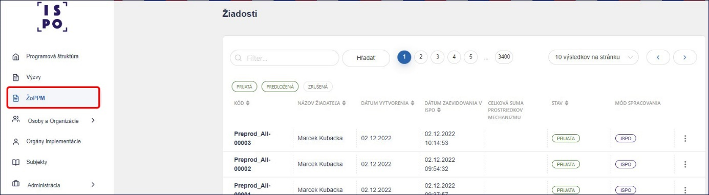
Po kliknutí na záložku ŽoPPM vidíme zoznam žiadostí podaných na výzvy. Na vyhľadávanie žiadostí slúži filter, v ktorom môžeme hľadať na základe kódu výzvy, kódu žiadosti či názvu žiadateľa. Filtrovať môžeme aj pomocou evidencie stavov žiadostí.
Pri konkrétnej žiadosti môžeme vidieť kód, názov žiadateľa, dátum vytvorenia, dátum a čas zaevidovania v ISPO, stav a mód spracovania.
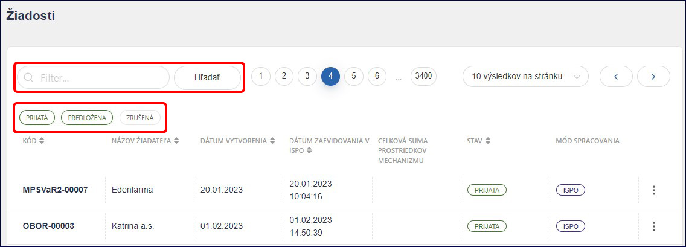
Mód spracovania žiadostí prijatých cez Portál ISPO je ISPO. V záložke ŽoPPM môžeme vidieť aj žiadosti, ktoré boli do systému vložené cez funkcionalitu Vkladanie údajov (kapitola 8) alebo boli importované podľa prílohy SIPOO č. 5.1 - 2 Vzor monitorovacích údajov. Takéto žiadosti majú mód spracovania Import.
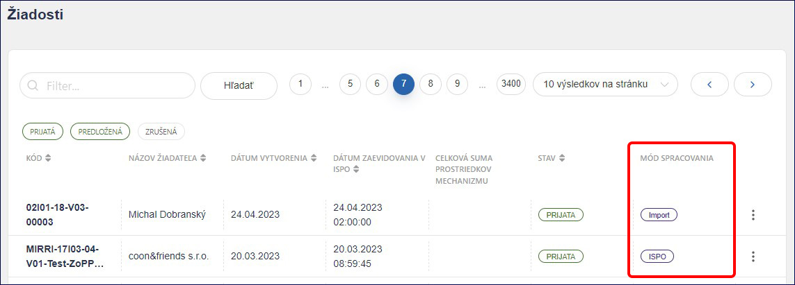
4.1) Stiahnutie ŽoPPM
Ak chceme konkrétnu žiadosť stiahnuť, pri danej žiadosti klikneme na tlačidlo Tri bodky. Stiahnuť môžeme Sumár žiadosti PDF alebo Úplnú žiadosť aj s prílohami. Úplná žiadosť aj s prílohami je súbor vo formáte ZIP, ktorý obsahuje Sumár žiadosti PDF, Úplnú žiadosť vo formáte PDF, Úplnú žiadosť vo formáte JSON a všetky prílohy, ktoré žiadateľ do žiadosti nahral cez Portál ISPO.
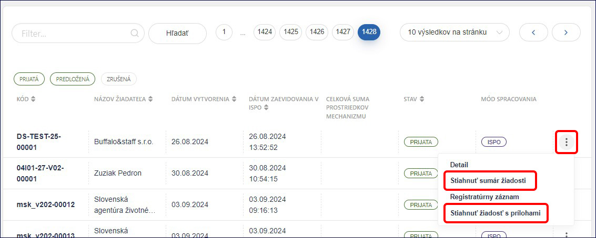
4.2) Registratúrny záznam ŽoPPM
Ak žiadateľ zaeviduje žiadosť prostredníctvom Portálu ISPO, žiadosť je automaticky v stave Prijatá. Ak ku žiadosti vytvoríme registratúrny záznam, stav žiadosti sa automaticky zmení do stavu Predložená.
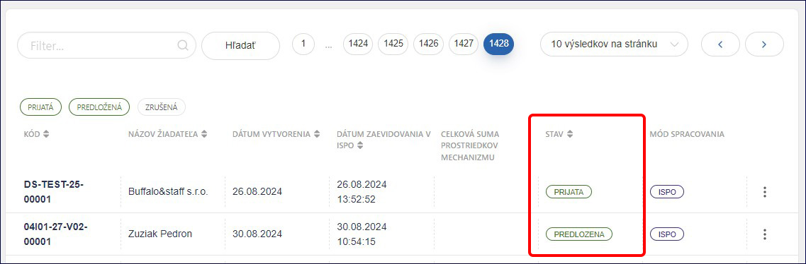
Registratúrny záznam vytvárame vtedy, ak sme prijali žiadateľom podpísaný Sumár žiadosti PDF v elektronickej alebo listinnej podobe. Pre vytvorenie registratúrneho záznamu potrebujeme mať priradenú pracovnú pozíciu Editor registratúrneho záznamu. Na obrazovku registratúrneho záznamu sa môžeme dostať dvoma spôsobmi:\ skratkou kliknutím na tlačidlo Tri bodky vpravo, kde vyberieme možnosť Registratúrny záznam,
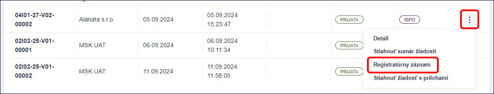
alebo kliknutím na konkrétnu žiadosť, v ktorej detaile klikneme na záložku Registratúrny záznam.
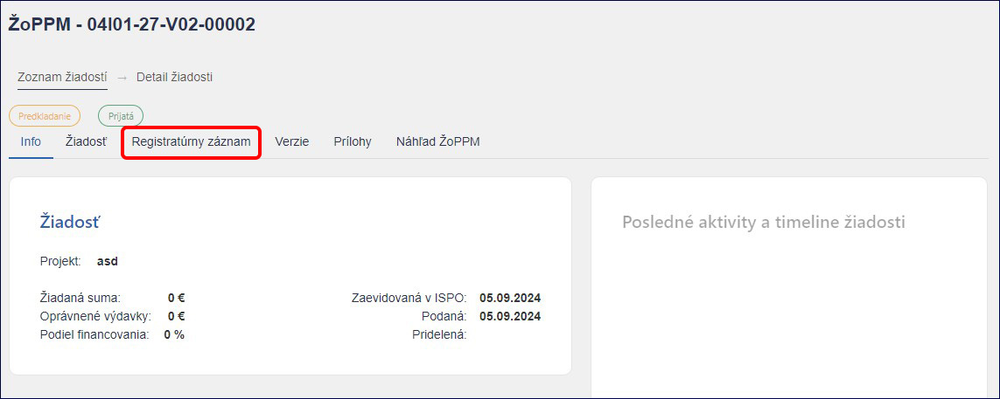
V záložke Registratúrny záznam klikneme na tlačidlo Zaevidovať.
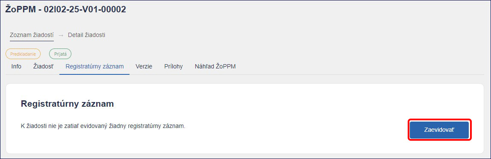
Vyplníme údaje ako Spisová značka, Dátum prijatia, Číslo registratúrneho záznamu a Link na RZ v registratúre a klikneme na tlačidlo Uložiť.
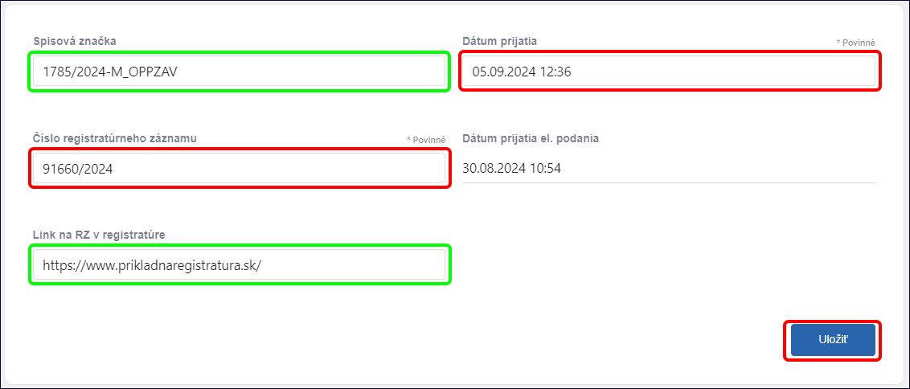
Po zaevidovaní registratúrneho záznamu sa zmení stav žiadosti z Prijatá na Predložená.
4.3) Detail ŽoPPM
Keď v zozname ŽoPPM klikneme na konkrétnu žiadosť, otvorí sa detail tejto žiadosti.
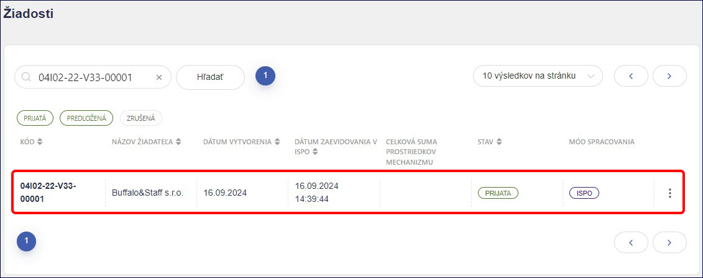
V detaile žiadosti môžeme vidieť kód a stav žiadosti. Detail žiadosti je rozdelený do šiestich záložiek. V prvej záložke Info sa nachádzajú základné údaje o žiadateľovi a o žiadosti, ako názov projektu, požadovanú sumu, oprávnené výdavky a dátum zaevidovania v ISPO.
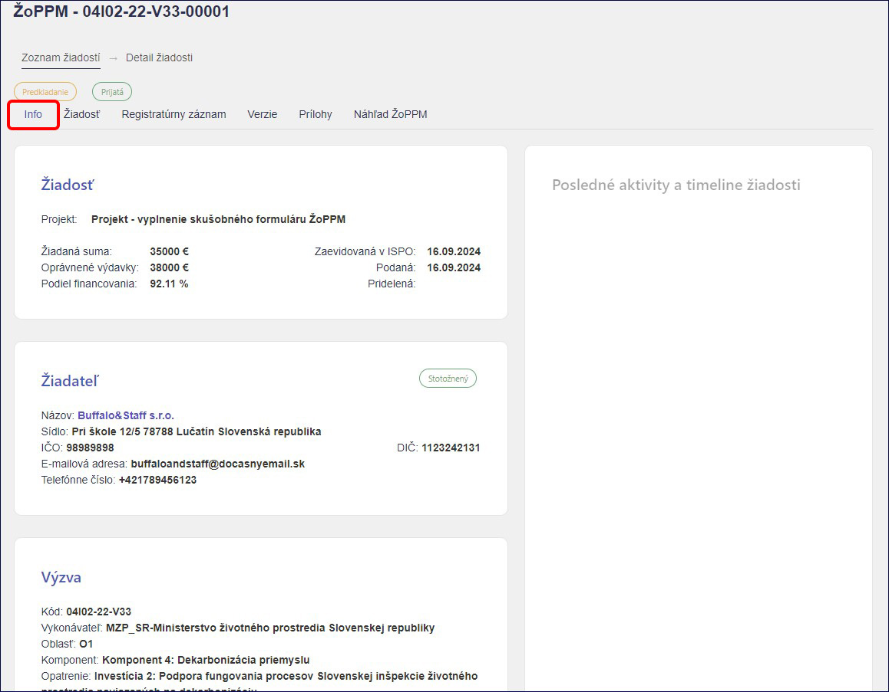
V záložke Žiadosť je ŽoPPM rozdelená do sekcií, v závislosti od konfigurácie a formulára ŽoPPM, podľa podkapitoly 3.3).
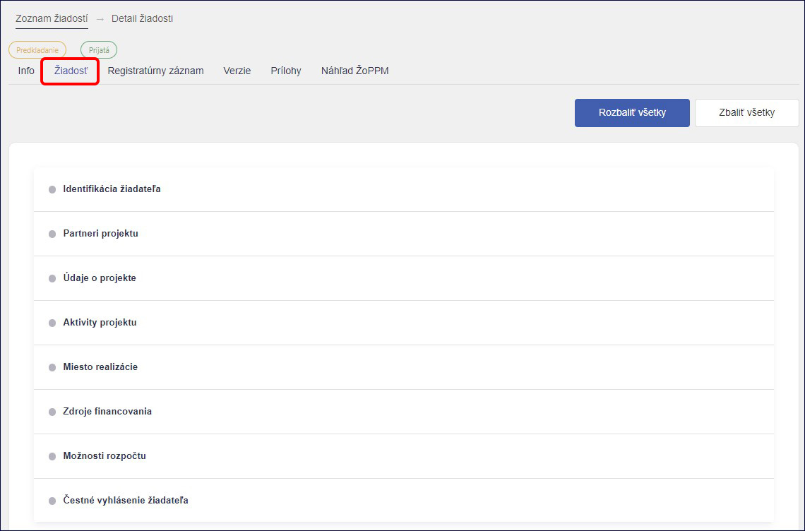
Kliknutím na konkrétnu sekciu, napr. Aktivity projektu, sa rozbalia údaje, ktoré v nej žiadateľ vyplnil.
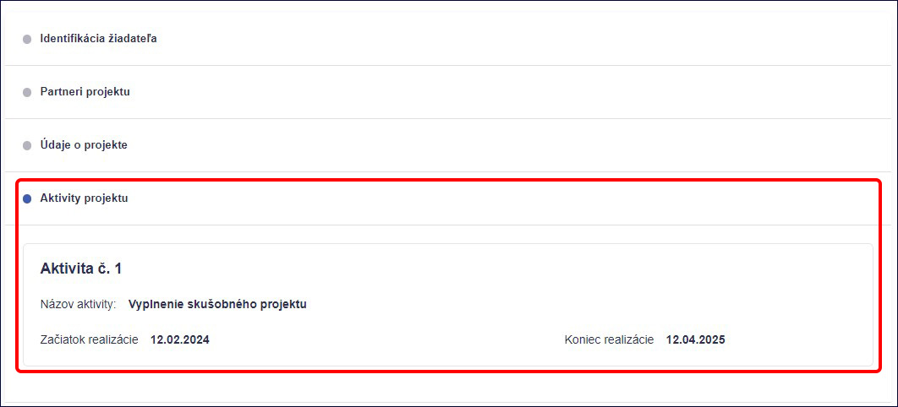
V záložke Prílohy sa prehľadne nachádzajú všetky súbory a dokumenty, ktoré žiadateľ v jednotlivých krokoch formulára ŽoPPM priložil. Záložka slúži pre lepší prehľad a sťahovanie dokumentov.
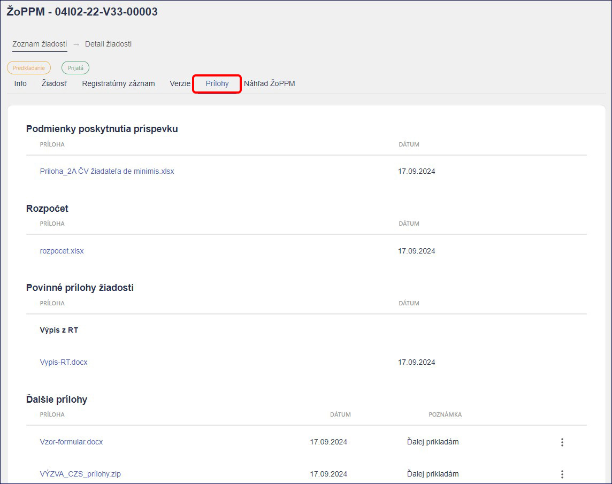
V záložke Náhľad ŽoPPM môžeme vidieť úplný prehľad žiadosti so všetkými údajmi a prílohami tak, ako ich uviedol žiadateľ na Portáli ISPO.
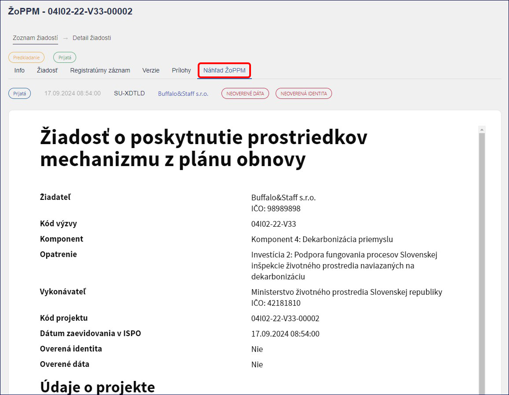
4.4) Posudzovanie ŽoPPM cez ISPO
Posudzovanie ŽoPPM začína nastavením posudzovania ŽoPPM a pridelením spracovateľov ŽoPPM na výzve podľa podkapitoly 3.7).
4.4.1) Po prijatí ŽoPPM cez Portál ISPO a následnom prijatí podpísaného sumára ŽoPPM, s pracovnou pozíciou Editor registratúrneho záznamu vytvoríme registratúrny záznam podľa podkapitoly 4.2). Po uložení sa zmení stav žiadosti z Prijatá na Predložená.
4.4.2) S pracovnou pozíciou Priraďovateľ ŽoPPM uvidíme túto ŽoPPM v zozname ŽoPPM - Čakajúce na priradenie na poslednom mieste v zozname. Klikneme na žiadosť.
Upozornenie! Pracovnú pozíciu Priraďovateľ ŽoPPM odporúčame prideliť vedúcemu pracovníkovi.
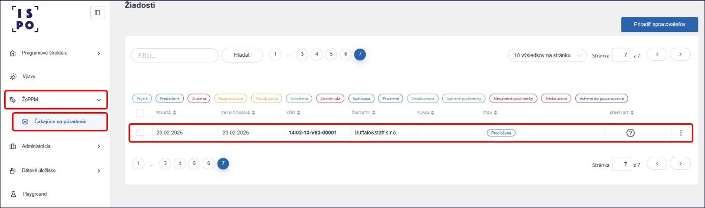
V žiadosti sa preklikneme na záložku Posudzovanie a klikneme na tlačidlo Priradiť spracovateľov.
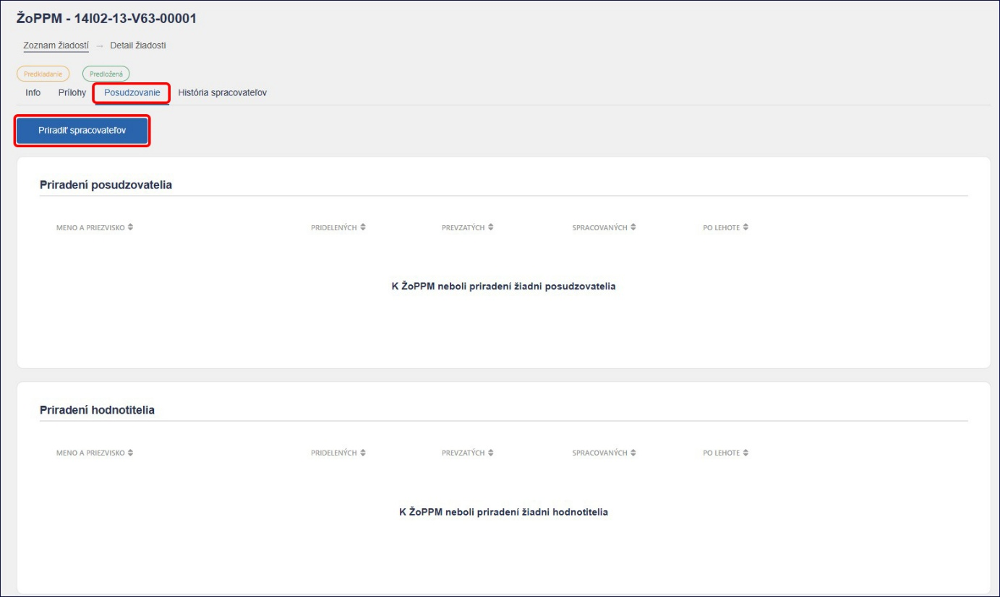
Zobrazí sa obrazovka pre priraďovanie osôb do jednotlivých pozícií spracovateľov ŽoPPM, ako posudzovatelia, hodnotitelia, arbitri a zazmluvnitelia. Zároveň sa zobrazí zoznam osôb, ktoré boli pre jednotlivé pozície priradené na výzve podľa podkapitoly 3.7).
Ak v zozname vidíme osoby, pridelíme tie, ktoré chceme aby boli posudzovateľmi pre danú ŽoPPM a to kliknutím na tlačidlo Prideliť pri osobe.
Príklad: Chceme, aby bol pre danú ŽoPPM posudzovateľom Peter Príkladný. Pri jeho mene klikneme na tlačidlo Prideliť.
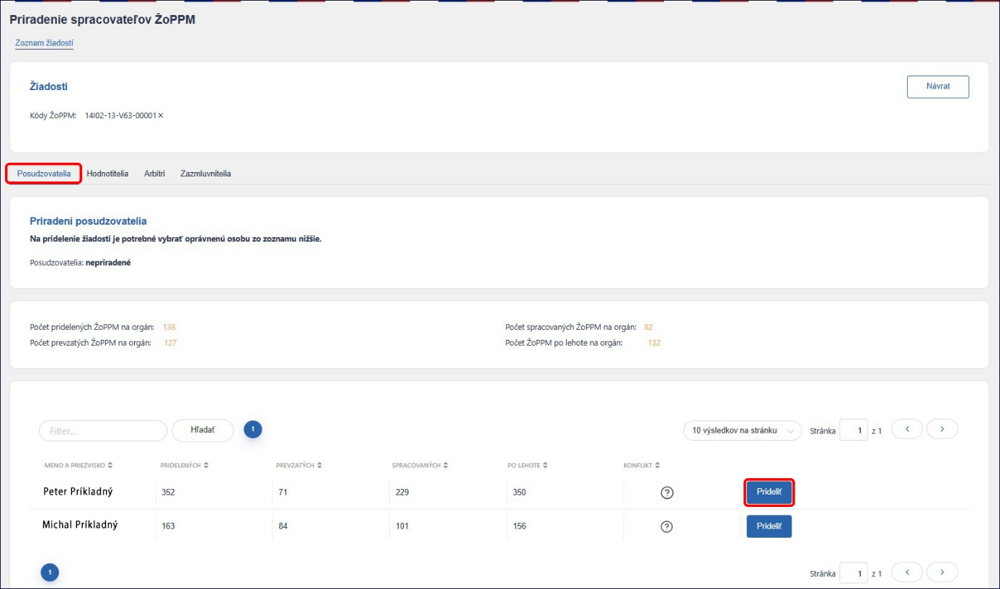
Ak chceme osobu odobrať, klikneme na tlačidlo Odobrať.
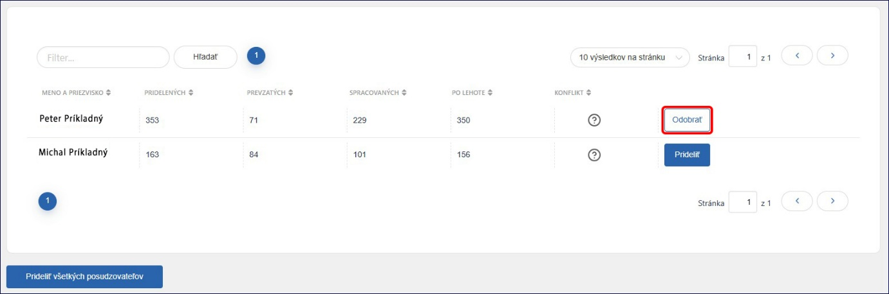
Ak chceme naraz prideliť všetky osoby v zozname, klikneme na tlačidlo Prideliť všetkých posudzovateľov.
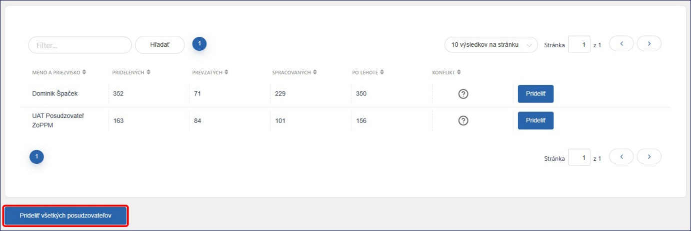
Následne sa preklikneme do záložky Hodnotitelia, Arbitri a Zazmluvnitelia a opakujeme proces pridelenia osôb.
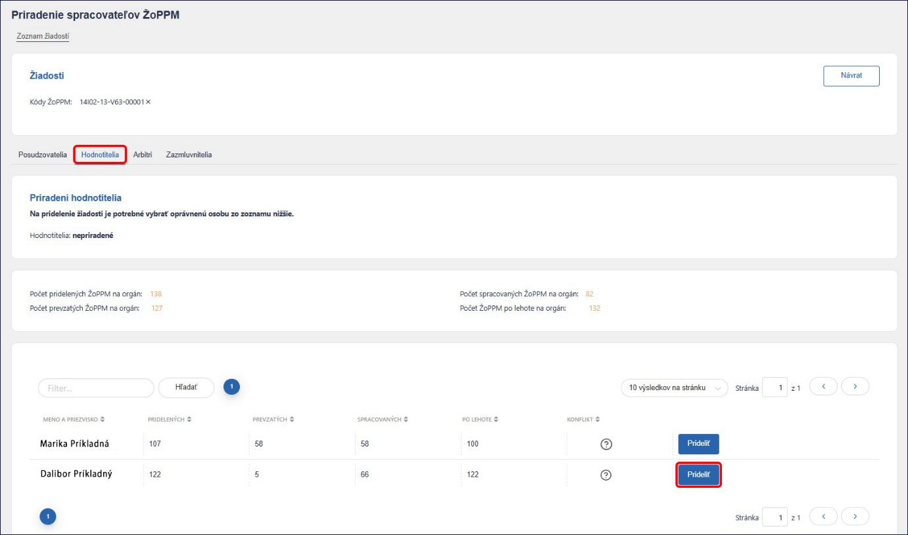
4.4.3) Počas prideľovania osôb na konkrétnu ŽoPPM nám pomáha aj model konfliktu záujmov. V zozname osôb sa nachádza stĺpec KONFLIKT, ktorý nám pomocou ikon napovedá, či je daná osoba v potenciálnom konflikte záujmov so žiadateľom alebo nie.
Ikona šedého otáznika znamená, že systém ISPO nedokázal z dostupných údajov o zamestnancovi a žiadateľovi vyhodnotiť konflikt záujmov a odporúčame možný konflikt overiť mimo systému ISPO.
Ikona zelenej fajky znamená, že systém ISPO z dostupných údajov o zamestnancovi a žiadateľovi nezistil konflikt záujmov a takúto osobu môžeme bezpečne prideliť.
Ikona červeného výkričníka znamená, že na základe dostupných údajov o zamestnancovi a žiadateľovi, systém vyhodnotil potenciálny konflikt záujmov. Ak presunieme kurzor myši na ikonu výkričníka, ukáže sa text s opisom potenciálneho konfliktu záujmov. Potenciálny konflikt záujmov preveríme aj mimo ISPO. Takúto osobu môžeme prideliť na ŽoPPM, avšak musíme uviesť dôvod, prečo sme osobu s potenciálnym konfliktom záujmov priradili na danú ŽoPPM.
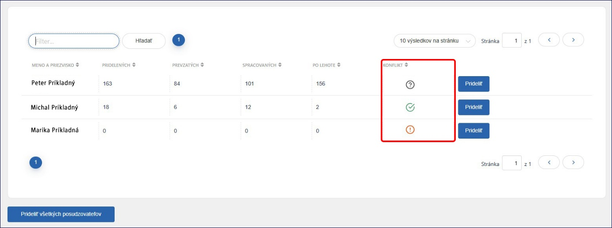
Príklad: Ak chceme na ŽoPPM prideliť zamestnanca Petra Príkladného, systém na základe informácií o ňom a žiadateľovi nedokázal vyhodnotiť konflikt záujmov a možný konflikt overíme mimo ISPO. Ak chceme prideliť zamestnanca Michala Príkladného, systém vyhodnotil, že nie je v konflikte záujmov so žiadateľom a môžeme ho prideliť. Ak chceme prideliť zamestnankyňu Mariku Príkladnú, systém vyhodnotil potenciálny konflikt záujmov. Ak prejdeme kurzorom myši nad ikonu výkričníka, systém nám vypíše, kde bol potenciálny konflikt záujmov zistený a je potrebné zvážiť pridanie tejto osoby ako spracovateľa danej ŽoPPM.
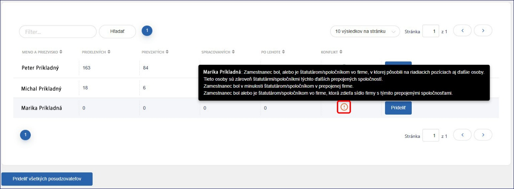
4.4.4) Ak sme boli na konkrétnu ŽoPPM priradení ako posudzovateľ, nájdeme ju v zozname ŽoPPM – Čakajúce na posúdenie.
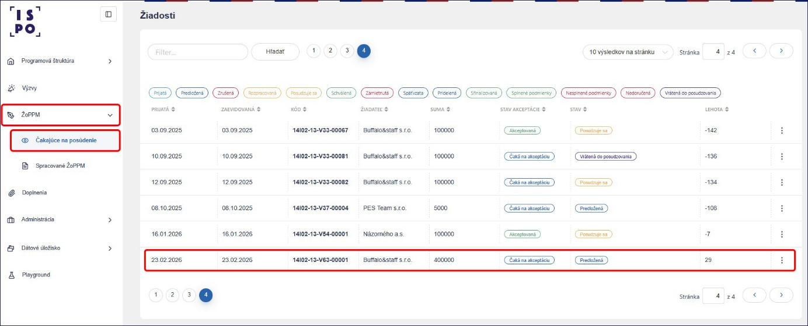
Po kliknutí na ŽoPPM v záložke Posudzovanie najskôr akceptujeme alebo zamietneme naše pridelenie na danú ŽoPPM. Klikneme na tlačidlo Prebrať posudzovateľom.
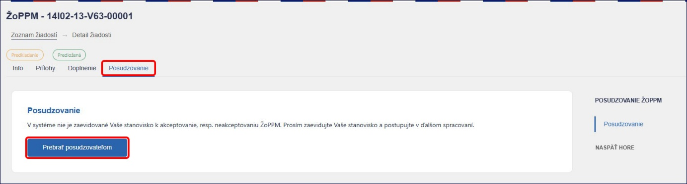
Zo zoznamu vyberieme možnosť Akceptujem – preberám do posudzovania alebo Neakceptujem – vrátiť na pridelenie inému posudzovateľovi a klikneme na tlačidlo Potvrdiť.
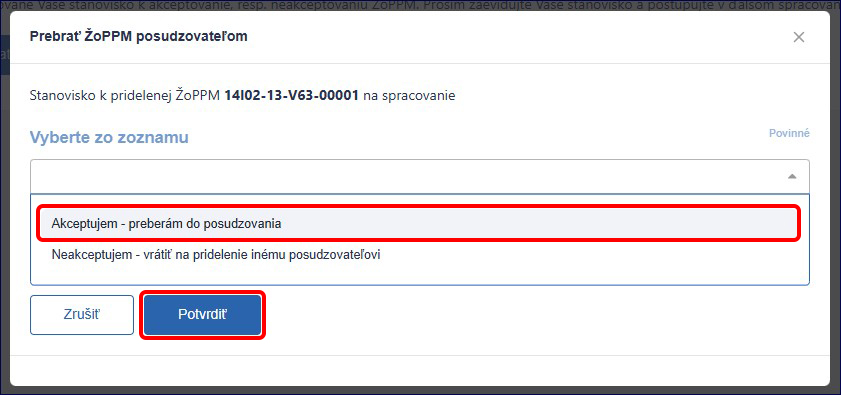
Ak sme pridelenie akceptovali, otvoria sa ďalšie záložky, ktoré nám umožnia vidieť detailné údaje ŽoPPM, ktorú si môžeme stiahnuť podľa podkapitoly 4.1) alebo si pozrieť si jej detaily podľa podkapitoly 4.3).
Ak sme prvým posudzovateľom na danej ŽoPPM, v záložke Posudzovanie klikneme na tlačidlo Zaevidovať úvodnú kontrolu. V prípade ak toto tlačidlo zaklikol iný posudzovateľ s rolou posudzovateľa na danej ŽoPPM, nebude už k dispozícii.
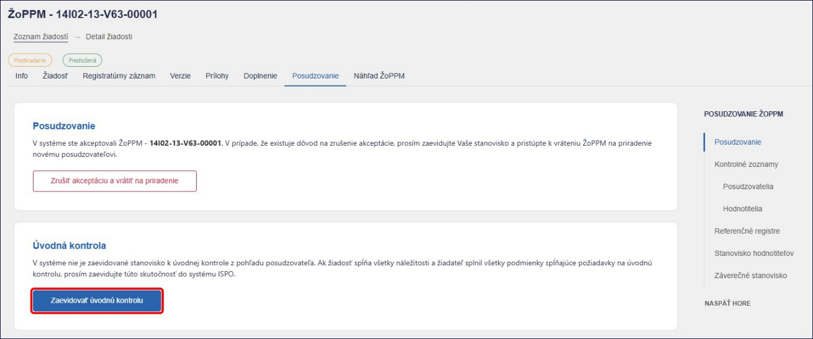
V záložke Kontrolné zoznamy si stiahneme vzor kontrolného zoznamu pre posudzovateľa, ktorý bol nahratý vo výzve v podkapitole 3.7). Kontrolný zoznam vypĺňame mimo ISPO a nahráme ho v záverečnom stanovisku posudzovateľa.
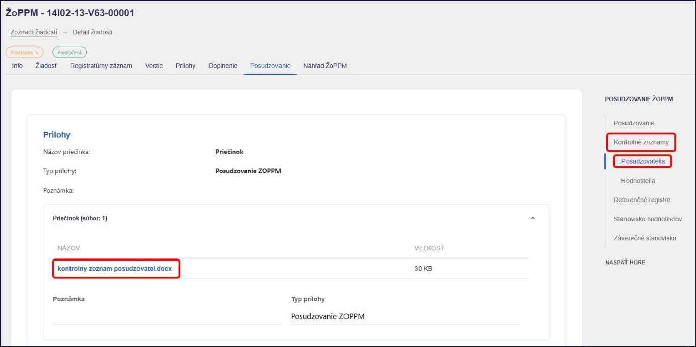
Poznámka: V prípade, že v ktorejkoľvek fáze posudzovania identifikujeme nedostatky alebo chýbajúce informácie v ŽoPPM, môžeme využiť funkcionalitu Doplnenie ŽoPPM, ktoré opisujeme v podkapitole 4.5).
V záložke referenčné registre nájdeme zoznam registrov tak, ako sme ich nastavili na výzve v podkapitole 3.7). Kliknutím na konkrétny register napr. Zoznam daňových subjektov registrovaných pre DPH sa dostaneme do jeho detailu.
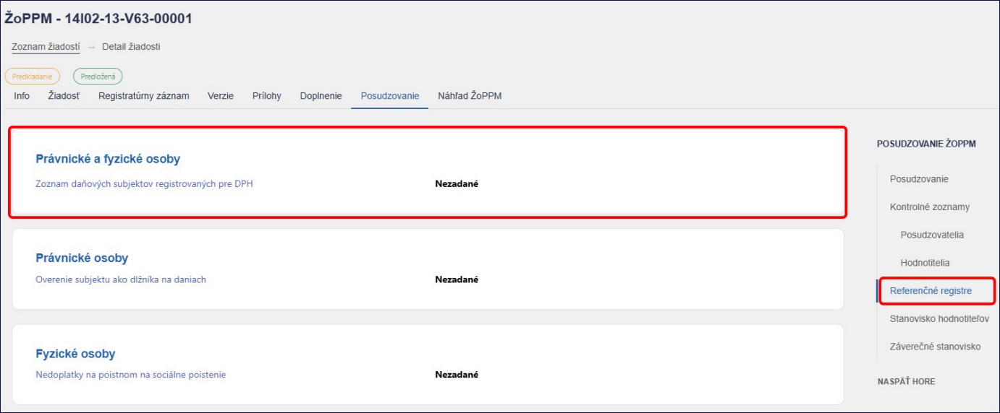
Následne klikneme na tlačidlo Zaevidovať údaje.
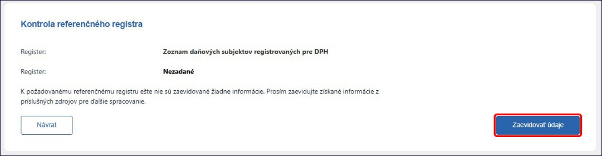
Vyplníme všetky povinné polia, ako Stav vyhodnotenia údajov, Zdroj údajov a Podklad, na základe ktorého boli údaje uložené. Po vyplnení polí klikneme na tlačidlo Uložiť.
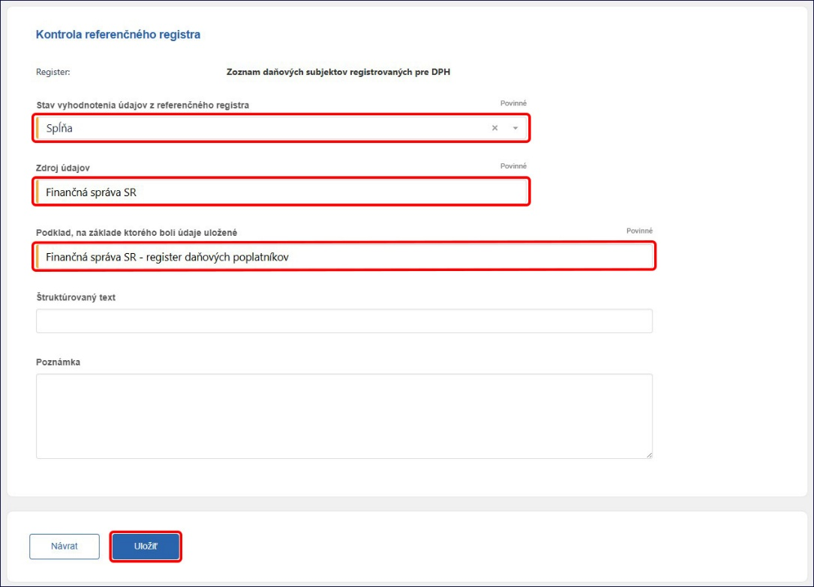
Po uložení sa zobrazí možnosť pre nahratie prílohy. Ak nahráme prílohu, nahratie potvrdíme opätovným kliknutím na tlačidlo Uložiť. Ak prílohu nenahráme, klikneme na tlačidlo Návrat.
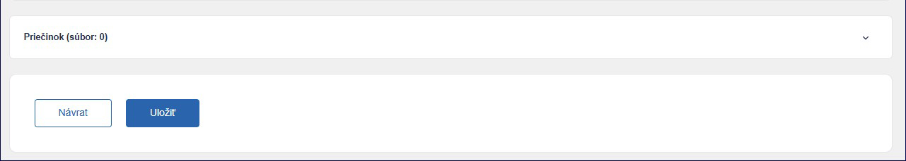
Po vyplnení a uložení údajov k referenčnému registru môžeme tieto údaje upraviť, vymazať alebo kliknutím na tlačidlo Návrat sa dostaneme späť na zoznam všetkých referenčných registrov.
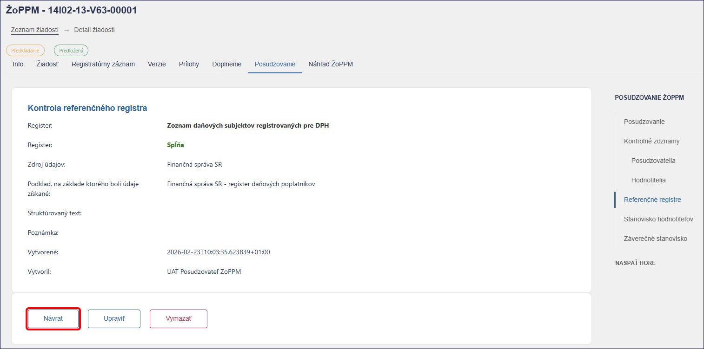
V časti Stanovisko hodnotiteľov môžeme pozrieť detail stanoviska všetkých hodnotiteľov.
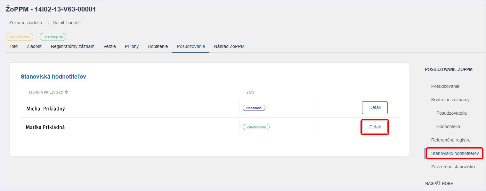
Kliknutím na tlačidlo Detail sa zobrazia údaje zadané daným hodnotiteľom, ako aj príloha kontrolného zoznamu hodnotiteľa.
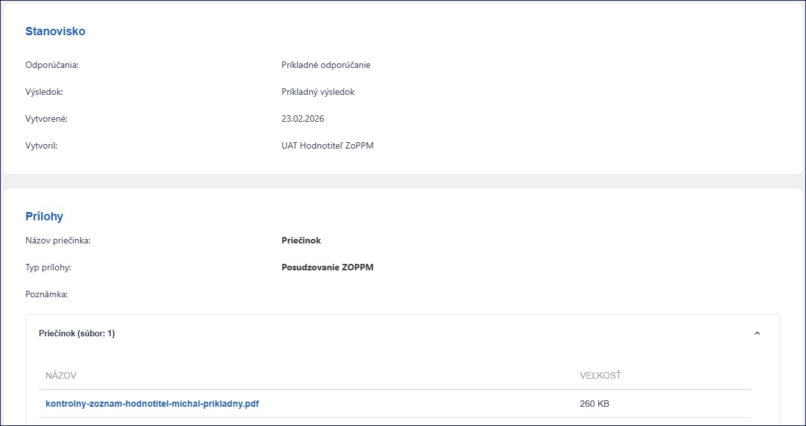
Záverečným krokom posudzovateľa je zaevidovanie Záverečného stanoviska. Ak je na ŽoPPM priradených viac posudzovateľov, do systému sa nahráva jedno finálne stanovisko za všetkých posudzovateľov. Klikneme na tlačidlo Zaevidovať záverečné stanovisko.
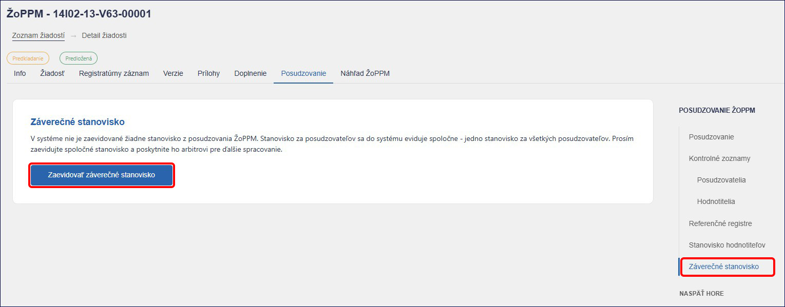
Vyplníme povinné polia ako Proces hodnotenia, Odporúčania a Výsledok. Klikneme na tlačidlo Uložiť.
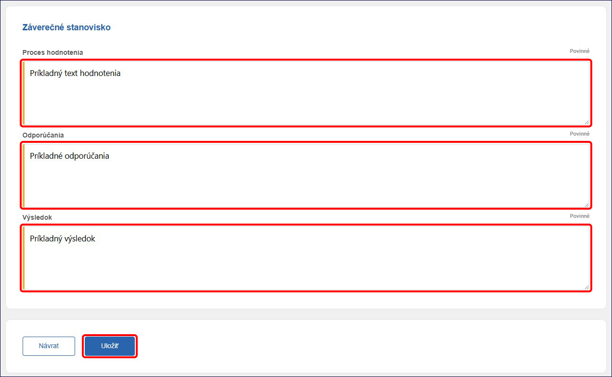
Po uložení sa sprístupní možnosť pre nahratie prílohy. Nahráme vyplnený kontrolný zoznam posudzovateľa. V prípade, že bolo posudzovateľov viac, nahráme všetky kontrolné zoznamy za každého posudzovateľa. Nahratie potvrdíme opätovným kliknutím na tlačidlo Uložiť.
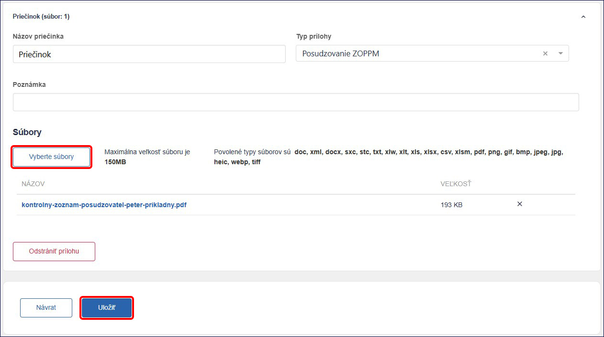
Po uložení a zaevidovaní záverečného stanoviska posudzovateľa ho môžeme ešte upraviť, vymazať alebo pokračovať postúpením ŽoPPM na arbitra. Ak chceme prácu posudzovateľa dokončiť, klikneme na tlačidlo Postúpiť na arbitra.
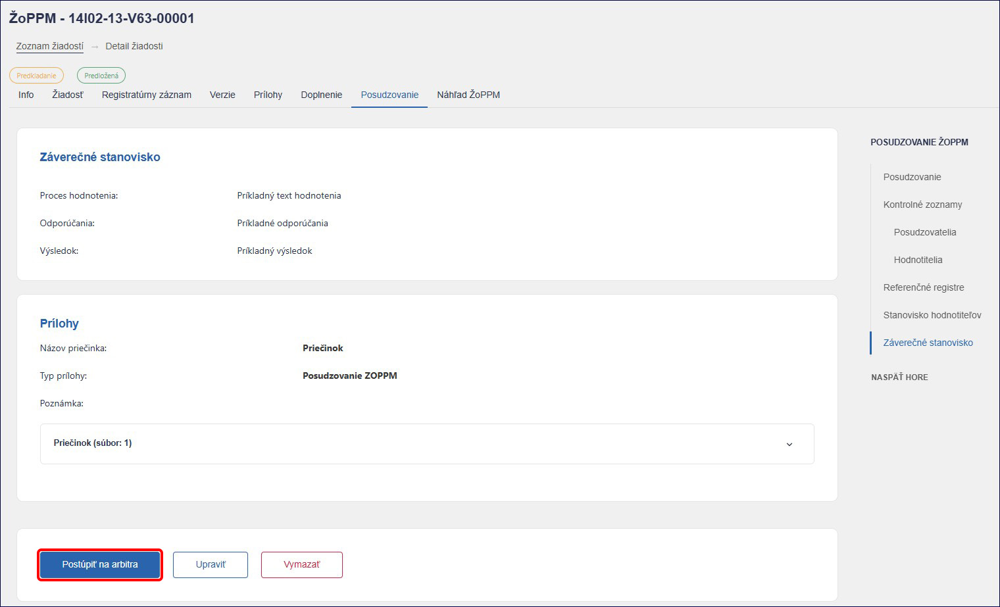
Upozornenie! Pokiaľ nebolo odkliknuté tlačidlo Zaevidovať úvodnú kontrolu, nebude možné uložiť záverečné stanovisko.
Takto posúdenú ŽoPPM v role posudzovateľa nájdeme v zozname ŽoPPM -> Spracované ŽoPPM.
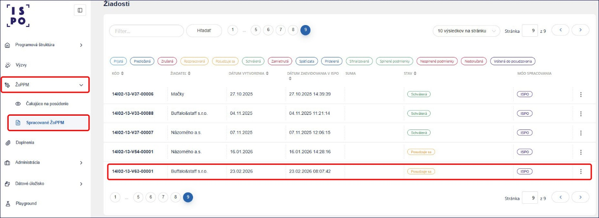
4.4.5) Ak sme boli na danú ŽoPPM priradení ako hodnotiteľ, nájdeme ju v zozname ŽoPPM – Čakajúce na hodnotenie. Po kliknutí na ŽoPPM v záložke Posudzovanie najskôr akceptujeme alebo zamietneme naše pridelenie na danú ŽoPPM. Klikneme na tlačidlo Prebrať hodnotiteľom.
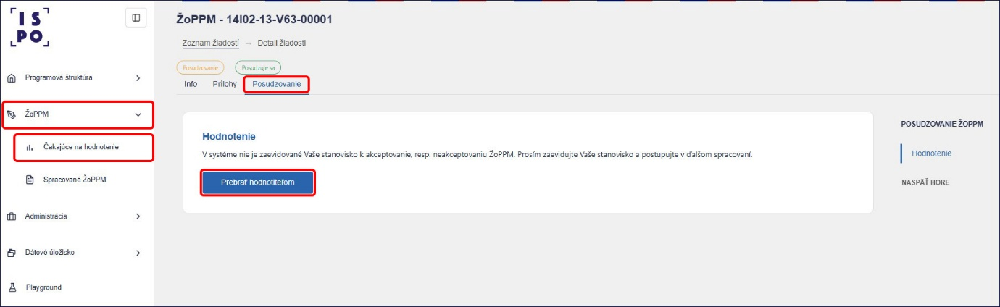
Zo zoznamu vyberieme možnosť Akceptujem – preberám do posudzovania alebo Neakceptujem – vrátiť na pridelenie inému posudzovateľovi a klikneme na tlačidlo Potvrdiť.
Ak sme pridelenie akceptovali, otvoria sa ďalšie záložky, ktoré nám umožnia vidieť detailné údaje ŽoPPM, ktorú si môžeme stiahnuť podľa podkapitoly 4.1) a pozrieť si jej detaily podľa podkapitoly 4.3).
V záložke Kontrolné zoznamy stiahneme vzor kontrolného zoznamu pre hodnotiteľa, ktorý bol nahratý vo výzve v podkapitole 3.7). Kontrolný zoznam vyplníme mimo ISPO a nahráme ho v záverečnom stanovisku hodnotiteľa.
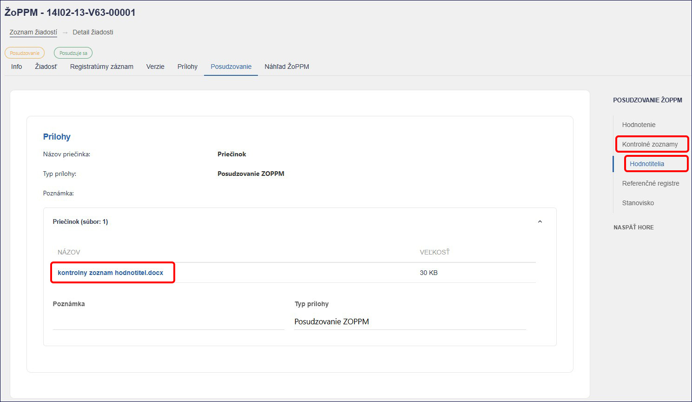
Vyhodnotenie referenčných registrov opisujeme v bode 4.4.4).
Poznámka: V prípade, že v ktorejkoľvek fáze posudzovania identifikujeme nedostatky alebo chýbajúce informácie v ŽoPPM, môžeme využiť funkcionalitu Doplnenie ŽoPPM, ktorú opisujeme v podkapitole 4.5).
Záverečným krokom hodnotiteľa je zaevidovanie Stanoviska. Ak je na ŽoPPM priradených viac hodnotiteľov, do systému nahráva každý hodnotiteľ stanovisko sám za seba. Klikneme na tlačidlo Zaevidovať stanovisko.
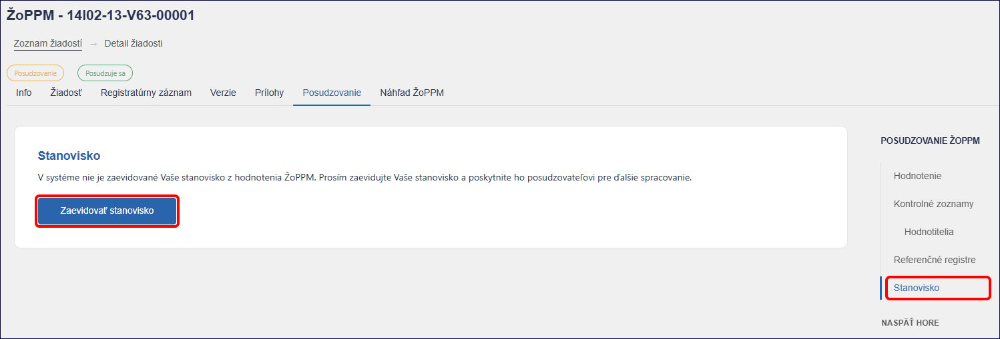
Vyplníme povinné polia ako Odporúčania a Výsledok. Klikneme na tlačidlo Uložiť.
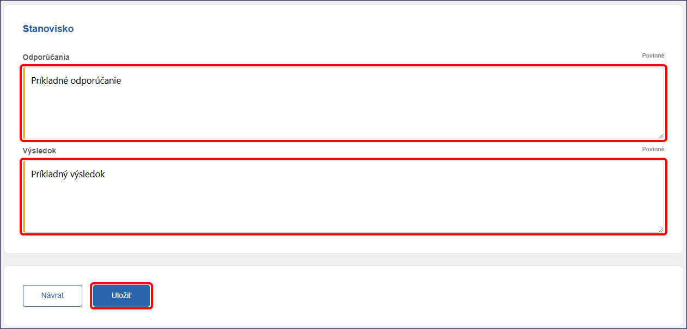
Po uložení sa sprístupní možnosť pre nahratie prílohy. Sem nahráme vyplnený kontrolný zoznam hodnotiteľa. Nahratie potvrdíme opätovným kliknutím na tlačidlo Uložiť.
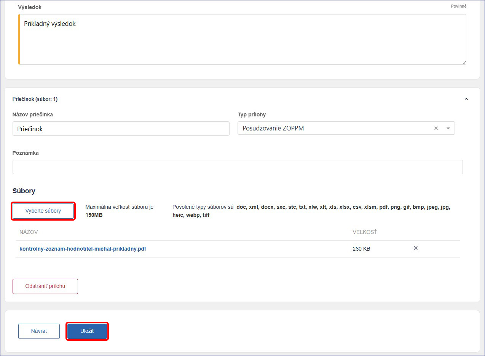
Po uložení a zaevidovaní stanoviska hodnotiteľa ho môžeme ešte upraviť, vymazať alebo ukončiť kliknutím na tlačidlo Ukončiť hodnotenie. Takto zaevidované stanovisko sa sprístupní pre posudzovateľa a následne aj arbitra.
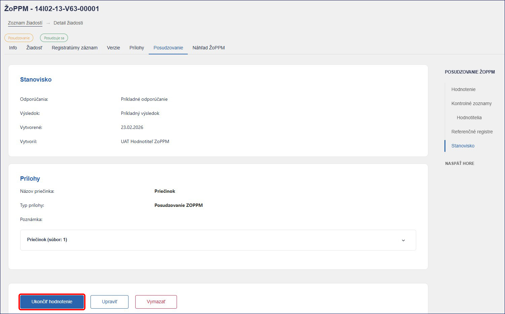
Takto ohodnotenú ŽoPPM v role hodnotiteľa nájdeme v zozname ŽoPPM -> Spracované ŽoPPM.
4.4.6) Ak sme boli na konkrétnu ŽoPPM priradení ako arbiter, nájdeme ju v zozname ŽoPPM – Čakajúce na arbitra.
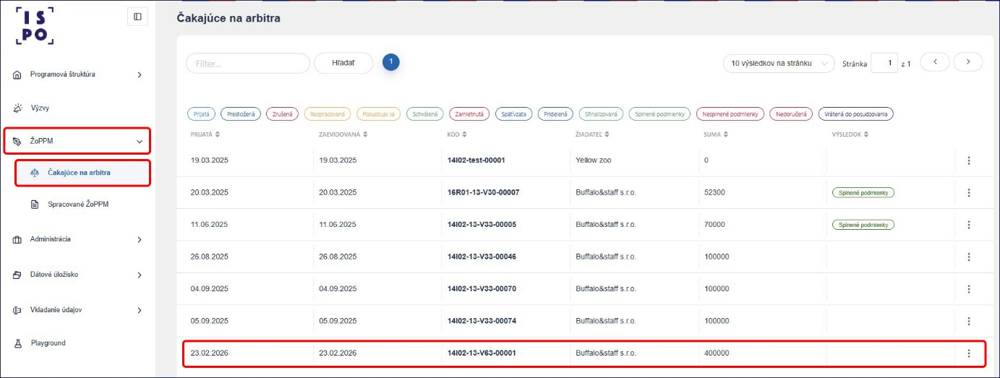
Po kliknutí na danú ŽoPPM v záložke Posudzovanie vidíme výsledky posúdenia a hodnotenia tak, ako boli zadané v predchádzajúcich bodoch. V záložke Referenčné registre môžeme kliknúť na konkrétny register a nahliadnuť, ako boli údaje v ňom zapísané.
Upozornenie! Arbiter údaje z výsledkov posudzovania neupravuje, iba číta a kontroluje. Ak nájde nedostatky, uvedie ich v záverečnej správe a vráti ŽoPPM späť do posudzovania.
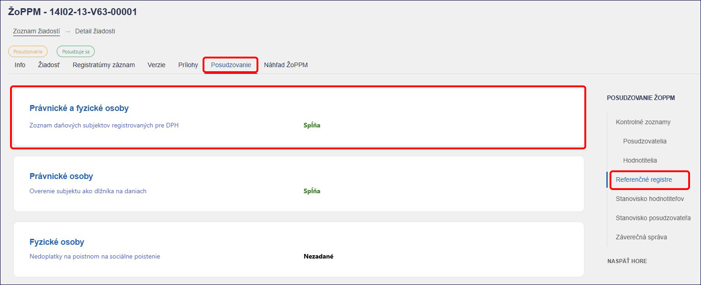
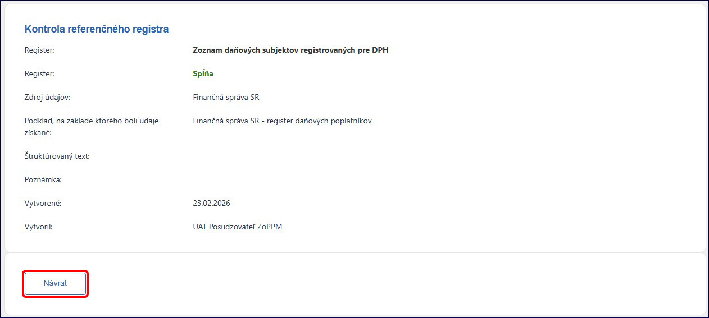
V záložke Stanovisko hodnotiteľov môžeme vidieť detail stanoviska všetkých hodnotiteľov vrátane príloh kontrolných zoznamov hodnotiteľov.
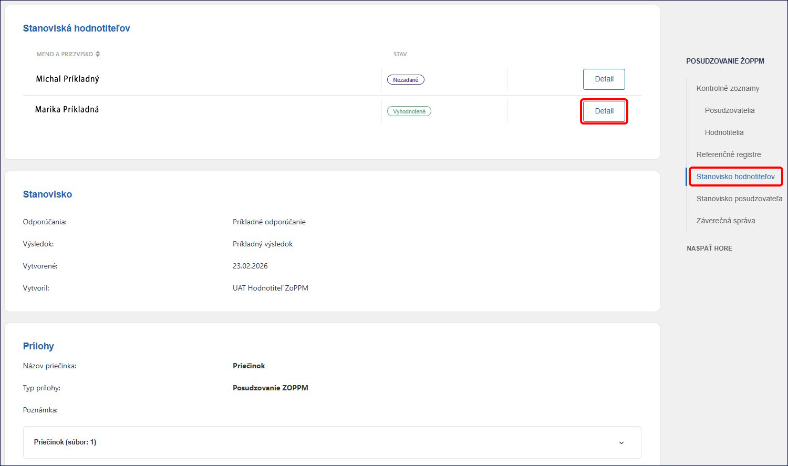
V záložke Stanovisko posudzovateľa môžeme vidieť detail stanoviska všetkých posudzovateľov, vrátane príloh kontrolných zoznamov posudzovateľov.
Po kontrole vyššie uvedených údajov môžeme pristúpiť k záverečnej správe arbitra. Klikneme na tlačidlo Zaevidovať záverečnú správu.
Vyplníme povinné polia ako Proces hodnotenia, Odporúčania a Výsledok. Klikneme na tlačidlo Uložiť.
Po uložení sa sprístupní možnosť pre nahratie prílohy. Nahratie prílohy potvrdíme opätovným kliknutím na tlačidlo Uložiť.
Následne sa sprístupnia nasledovné tlačidla:
-
Splnené podmienky – v prípade, že žiadosť spĺňa všetky podmienky a bola posudzovateľmi posúdená pozitívne, klikneme na tlačidlo Splnené podmienky a ŽoPPM bude pripravená na zazmluvnenie v stave Splnené podmienky.
-
Nesplnené podmienky v prípade, že žiadosť nespĺňa podmienky a bola posudzovateľmi posúdená negatívne, klikneme na tlačidlo Nesplnené podmienky. ŽoPPM bude v stave Nesplnené podmienky. V prípade, že sa žiadateľ odvolá, je možné takúto žiadosť vrátiť späť do posudzovania.
-
Vrátiť na posúdenie - v prípade, že arbiter identifikoval nedostatky v posudzovaní a hodnotení, prípadne identifikoval nedostatky v samotnej ŽoPPM, môže žiadosť vrátiť na opätovné posúdenie a hodnotenie, pričom tieto nedostatky označí v záverečnej správe. ŽoPPM ostane v stave Posudzuje sa a zopakuje sa celý proces posudzovania.
-
Späťvzatie - ak žiadateľ po podaní ŽoPPM informoval vykonávateľa o späťvzatí, arbiter môže zakliknúť toto tlačidlo. ŽoPPM sa dostane do stavu Späťvzatá, tento stav je nenávratný a žiadosť tak bude ukončená týmto stavom.
Ak ŽoPPM z výsledkov posudzovania spĺňa všetky podmienky, klikneme na tlačidlo SSplnené podmienky.
Následne do textového poľa môžeme uviesť poznámku a klikneme na tlačidlo Potvrdiť.
Takto schválenú ŽoPPM v role arbitra nájdeme v zozname ŽoPPM -> Spracované ŽoPPM.
Ak ŽoPPM z výsledkov posudzovania nespĺňa podmienku, klikneme na tlačidlo Nesplnené podmienky.
Následne do textového poľa uvedieme poznámku a klikneme na tlačidlo Potvrdiť.
Takto neschválenú ŽoPPM v role arbitra nájdeme v zozname ŽoPPM -> Spracované ŽoPPM. Po kliknutí na danú ŽoPPM máme možnosť kliknúť na tlačidlo Vrátiť na posúdenie, ktoré môžeme použiť v prípade, že sa žiadateľ odvolá. Tým sa žiadosť dostane na opätovné posúdenie a celý proces posudzovania sa zopakuje.
4.4.7) Úlohou zazmluvniteľa v systéme je nahrať zmluvu, ktorá bola uzatvorená medzi vykonávateľom a prijímateľom a zaevidovať stav projektu Zazmluvnený.
Ak bola ŽoPPM schválená arbitrom a boli sme na ňu priradení ako zazmluvniteľ, nájdeme ju v zozname ŽoPPM - Čakajúce na zazmluvnenie.
Po kliknutí na ŽoPPM v záložke Posudzovanie môžeme pozrieť ako boli vyhodnotené referenčné registre posudzovateľmi a hodnotiteľmi, tiež si môžeme pozrieť stanoviská hodnotiteľov a posudzovateľov, ako aj záverečnú správu arbitra.
V záložke Zazmluvnenie môžeme vykonať niekoľko akcií. V prípade, že ŽoPPM splnila podmienky, ale už boli napr. vyčerpané finančné prostriedky na výzvu, môžeme danú ŽoPPM Vložiť do rezervného zoznamu.
Takto označenú ŽoPPM nájdeme v záložke ŽoPPM – Rezervný zoznam ŽoPPM. V prípade, že sa finančné prostriedky z akýkoľvek dôvodov znovu uvoľnia, ŽoPPM z rezervného zoznamu odoberieme kliknutím na tlačidlo Odobrať z rezervného zoznamu a následne ju môžeme zazmluvniť.
Ak došlo k uzavretiu zmluvy medzi vykonávateľom a prijímateľom, nahráme zmluvu a údaje k nej do systému. Klikneme na tlačidlo Nahrať zmluvu.
Sprístupnia sa polia pre zadanie údajov zmluvy ako Číslo zmluvy, Dátum uzavretia zmluvy, Dátum zverejnenia zmluvy v CRZ, Dátum platnosti zmluvy a Link CRZ. Klikneme na tlačidlo Uložiť.
Po uložení sa sprístupní pole pre nahratie príloh k zmluve, kde môžeme nahrať súbor s celým znením zmluvy. Po nahratí súboru opätovne klikneme na tlačidlo Uložiť.
Po uložení a nahratí zmluvy ju môžeme ešte upraviť alebo vymazať. Pokračovať môžeme kliknutím na tlačidlo Návrat.
Následne sa sprístupní tlačidlo Zazmluvniť, na ktoré klikneme.
Po kliknutí na tlačidlo Zazmluvniť a potvrdení tohto rozhodnutia v systéme automaticky vznikne projekt v stave zazmluvnený, ktorý nájdeme v zozname Projekty.
Údaje o projekte sa automaticky dotiahnu aj do reportu. Ak bolo na výzve nastavené prijímanie žiadostí o platbu cez Portál ISPO podľa podkapitoly 3.8), zazmluvnený projekt je zároveň pripravený pre prijímateľa, ktorý naň môže podať ŽoP.
4.5) Doplnenie ŽoPPM
Ak vykonávame posudzovanie ŽoPPM cez ISPO podľa podkapitoly 4.4), možnosť doplnenia ŽoPPM je naviazaná na pracovné pozície Posudzovateľ ŽoPPM a Hodnotiteľ ŽoPPM. Ak nevykonávame posudzovanie ŽoPPM cez ISPO, potrebujeme mať priradenú pracovnú pozíciu Editor doplnenia ŽoPPM/Projektu.
Po kliknutí na konkrétnu ŽoPPM, prejdeme do časti Doplnenie. Ak ešte nebolo vytvorené žiadne doplnenie na danú ŽoPPM, zoznam je prázdny. V ISPO rozlišujeme dva typy doplnenia a to Nové priame doplnenie a Nové doplnenie
4.5.2) Nové priame doplnenie je typ doplnenia, kedy sme chýbajúce údaje od žiadateľa obdržali mimo ISPO, napríklad cez e-mail a do ŽoPPM tieto údaje chceme zapracovať. Klikneme na tlačidlo Nové priame doplnenie.
V poli Výber doplnenia zvolíme možnosť ŽoPPM, uvedieme Názov doplnenia a klikneme na tlačidlo Vytvoriť doplnenie.
V nasledujúcej obrazovke môžeme kedykoľvek upraviť názov doplnenia. Zároveň sa sprístupnili sekcie formulára ŽoPPM tak, ako boli nastavené na výzve a ktoré žiadateľ vyplnil cez Portál ISPO.
Kliknutím na jednotlivé sekcie sa otvorí detail sekcie, kde uvidíme Aktuálnu hodnotu, ktorá obsahuje údaje, ktoré vyplnil žiadateľ cez Portál ISPO. Časť Upravená hodnota slúži pre nás a môžeme do nej vpisovať doplnené údaje od žiadateľa.
Vzorovo klikneme na prvú sekciu Údaje o projekte. Počas posudzovania ŽoPPM sme zistili, že žiadateľ uviedol príliš stručný Popis projektu. Výzvu na doplnenie sme odoslali mimo systému ISPO, napríklad e-mailovou komunikáciou, ktorou sme obdržali aj odpoveď žiadateľa s doplnenými údajmi k popisu projektu.
Odpoveď žiadateľa s údajmi k popisu projektu následne zapracujeme cez priame doplnenie tak, že prepíšeme údaje v časti Upravená hodnota a následne klikneme na tlačidlo Uložiť.
Takýmto spôsobom môžeme doplniť údaje do akejkoľvek sekcie. Ak sme zapracovali všetky žiadateľom doplnené údaje, môžeme priame doplnenie ukončiť tlačidlom Uzavrieť doplnenie.
V modálnom okne uvedieme Názov verzie a Dôvod, na základe ktorého toto doplnenie uzatvárame.
Uzatvorením doplnenia, čiže jeho zapracovaním sa vytvorí nová verzia ŽoPPM so zapracovanými zmenami po doplnení. Verzie ŽoPPM opisujeme v bode 4.5.4).
4.5.3) Nové doplnenie je typ doplnenia, v ktorom najskôr vyšpecifikujeme chýbajúce údaje ŽoPPM a vyzveme žiadateľa cez Portál ISPO, aby ich doplnil. Žiadateľ ich doplní cez Portál ISPO a odošle späť k nám. Následne jeho odpoveď zapracujeme do ŽoPPM. Klikneme na tlačidlo Nové doplnenie.
Vyplníme Názov doplnenia, štandardne „Výzva na doplnenie ŽoPPM - 14I02-13-V03-00005“. V poli Výber doplnenia vyberieme možnosť ŽoPPM. Pole Dátum exspirácie je automatický vyplnené dátumom 10 dní od aktuálneho dňa. Ak nám 10 dní nevyhovuje, uvedieme iný dátum.
Následne sa sprístupní časť Požiadavky, v ktorej špecifikujeme požiadavky na žiadateľa. Klikneme na pole Nová požiadavka.
Otvoria sa ďalšie polia ako Sekcia, Názov požiadavky, Detail požiadavky a možnosť pridať prílohu k požiadavke. V poli Sekcie sa nachádzajú jednotlivé kroky formulára ŽoPPM. Vyberieme sekciu, v ktorej sme identifikovali chýbajúce údaje. Vzorovo klikneme na prvú sekciu Údaje o projekte. Počas posudzovania ŽoPPM sme zistili, že žiadateľ uviedol príliš stručný Popis projektu, preto uvedieme do poľa Názov požiadavky napr. „Doplnenie popisu projektu“. V poli Detail požiadavky uvedieme detailnú požiadavku napr. „V žiadosti je uvedený stručný popis projektu, z ktorého nie je jasný rozsah a obsah projektu. Prosíme o doplnenie popisu projektu v rozsahu opísanom vo výzve. V prílohe posielame vzor popisu projektu.“ Následne môžeme kliknúť na tlačidlo Pridať novú prílohu a nahrať vzorový súbor pre žiadateľa.
Kliknutím na tlačidlo Pridať novú požiadavku môžeme rovnakým spôsobom špecifikovať požiadavku ku každej sekcii formulára ŽoPPM. Ak sme požiadavky vyšpecifikovali, môžeme takto zadefinovanú výzvu na doplnenie odoslať žiadateľovi na Portál ISPO kliknutím na tlačidlo Odoslať žiadateľovi. Takéto doplnenie je v stave Čaká na odpoveď.
Náhľad výzvy na doplnenie na Portáli ISPO.
-
Žiadateľ môže reagovať napísaním odpovede a nahratím prílohy
-
Žiadateľ môže reagovať vybraním jednej z možností spĺňam, nespĺňam, netýka sa.
Keď žiadateľ odpovie na naše požiadavky, doplnenie sa dostane do stavu Zodpovedaná. V danej ŽoPPM klikneme na záložku Doplnenie a v zozname klikneme na doplnenie v stave Zodpovedaná.
Po otvorení detailu doplnenia klikneme na konkrétnu požiadavku. V prvej časti vidíme nami zadefinovanú požiadavku a v druhej časti odpoveď od žiadateľa. Pre zapracovanie odpovede žiadateľa do ŽoPPM klikneme na tlačidlo Zapracovať doplnenie.
Pri zapracovaní odpovede postupujeme rovnakým spôsobom ako pri priamom doplnení, ktoré opisujeme v bode 4.5.2.), pričom ako zdroj údajov využívame odpoveď žiadateľa. Po zapracovaní odpovedí žiadateľa klikneme na tlačidlo Uzatvoriť, čím dokončíme doplnenie.
V prípade, že žiadateľ neodpovedal na výzvu na doplnenie do dátumu určeného pre odpoveď, môžeme doplnenie označiť za exspirované.
V prípade, že žiadateľ odpovedal nedostatočným spôsobom, môžeme doplnenie zamietnuť.
4.5.4) Každým zapracovaním a uzatvorením doplnenia vzniká nová verzia ŽoPPM. Verzie nájdeme v danej ŽoPPM v záložke Verzie. Ak bolo vykonané a zapracované akékoľvek doplnenie, v zozname uvidíme viac ako jednu verziu. Verzie idú po poradí. Na prvom mieste s označením 0 sa nachádza pôvodná verzia ŽoPPM.
Pre porovnávanie verzií medzi sebou označíme zaškrtávacie políčka dvoch verzií a klikneme na tlačidlo Porovnať.
Upozornenie! Systém ISPO dokáže v jednej chvíli porovnať len dve verzie ŽoPPM. Ak daná ŽoPPM má viac ako dve verzie, nevieme porovnať všetky naraz.
Zobrazia sa všetky sekcie formulára ŽoPPM. Kliknutím na sekcie sa otvorí detail sekcie.
Klikneme na sekciu Údaje o projekte, na ktorej sme vykonali doplnenie podľa bodov 4.5.2) a 4.5.3). Po rozbalení sekcie na ľavej strane vidíme pôvodnú verziu a na pravej strane novú verziu po doplnení. Polia, v ktorých sa údaje doplnili sú označené farebne.